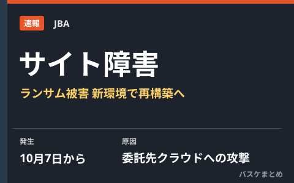

JBA公式サイトがランサムウェア被害 島田会長「元環境の復旧は難しい」新環境で再構築へ

日本バスケットボール協会（JBA）は10月14日の理事会後のメディアブリーフィングで、公式サイトをはじめ多くの大会特設サイトが10月7日から閲覧できなくなっている障害について説明しました。原因はサイト運用を委託している事業者のクラウドサービスが第三者からランサムウェア攻撃を受けたことで、運用データとバックアップが同じクラウド領域にあったため元の環境への復旧は困難な状況。島田慎二会長は新しい環境でのサイト再構築を進める方針を示しました。
原因は委託先クラウドへのランサムウェア攻撃、バックアップも消失
JBAによると、公式サイトの運用を委託している事業者のクラウドサービス（IDCFクラウド）が第三者からランサムウェア攻撃を受けたことが障害の原因です。10月7日以降、公式サイトや多くの大会特設サイトが閲覧できない状態となり、現在は簡易的なトップページのみが表示されています。運用データとバックアップが同じクラウド領域に保管されていたため手元に複製がなく、事業者側でもデータの復元は困難とされ、元の環境をそのまま復旧させることは極めて難しいとの見通しが示されました。
| 項目 | 内容 |
|---|---|
| 障害発生 | 10月7日から公式サイト・大会特設サイトが閲覧不可に |
| 原因 | 運用委託先クラウドサービスへのランサムウェア攻撃 |
| 復旧見通し | バックアップ消失のため元環境の復旧は困難、新環境で再構築へ |
主催大会への影響は限定的、個人情報の外部流出は現時点で未確認
会員登録システム「Team JBA」や都道府県協会の各サイトは別の基盤で稼働しており、今回の障害の影響を受けていません。過去の大会の試合記録もウェブとは別の社内環境に保管されていたため無事とされ、主催大会自体は予定どおり開催される見通しです。個人情報については、問い合わせフォームを通じて送られた氏名・電話番号・メールアドレスがデータベースに含まれていますが、事業者による調査ではこれまでのところ外部流出を示す事実は確認されていないと説明されています。ただし調査は継続中です。
公式サイト全体の再開時期は未定
障害前の公式サイトの内容は、JBAサイト上にアーカイブとして公開されているとのことです。公式サイト全体の再開時期は現時点で未定としており、新しい環境での再構築作業が進められています。
Q. 大会日程や結果の確認はどこでできる？
A. 現在は簡易的なトップページのみの表示となっていますが、障害前の内容はアーカイブとして公開されています。最新の大会情報は各都道府県協会のサイトや公式SNS、報道でも確認できます。
出典：バスケットボールキング「JBAが公式サイト障害について説明「もう戸せないという状態になった」復旧困難により再構築へ」／バスケットボールZINE「JBA公式サイトがランサム被害、島田会長『元環境の復旧は難しい』新環境で再構築へ」／デイリースポーツ「バスケ日本協会にシステム障害 サイト委託先にサイバー攻撃」ほか
https://basketballking.jp/news/japan/20261014/637749.html
https://www.basketball-zine.com/article/detail/118054
https://www.daily.co.jp/general/2026/10/14/0020927184.shtml